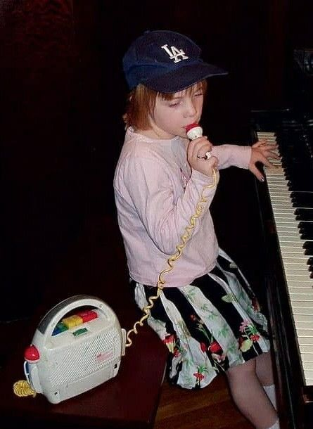
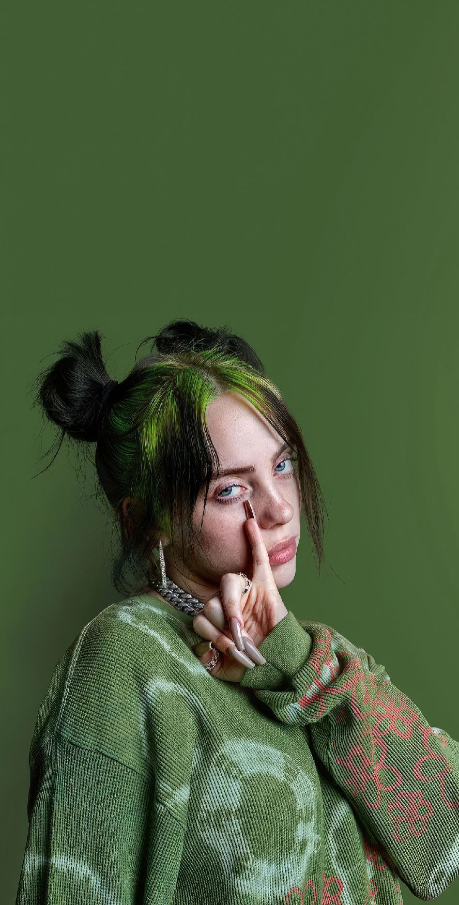
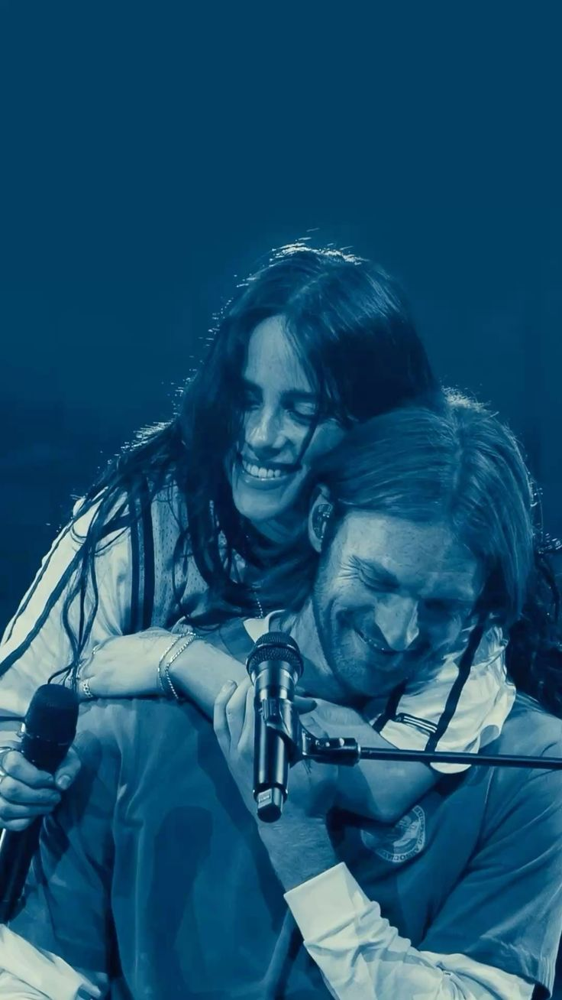

ABOUT THE ARTIST

HER CHILDHOOD
Billie Eilish Pirate Baird O'Connell was born on December 18, 2001, in Los Angeles, California. She grew up in a creative family and was homeschooled alongside her older brother, FINNEAS.
Music has been part of her life since she was little. She joined the Los Angeles Children's Chorus when she was eight and started writing songs at a young age.

HER PERSONAL STYLE
Outside of music, Billie is known for her unique fashion sense. She loves experimenting with different looks, from oversized clothes to bold hair colors.
Her style has become an important part of how she expresses herself, and she isn't afraid to try something different.

FAMILY & MUSIC
Billie is very close to her family, especially her brother FINNEAS, who is also her main musical collaborator.
They started making music together when they were young. FINNEAS produced "Ocean Eyes", the song that helped Billie become famous in 2015.
They continue writing and producing music together, and their creative partnership has been an important part of Billie's career.

CAREER HIGHLIGHTS
Since releasing "Ocean Eyes", Billie has become one of the most recognized artists of her generation.
- 2015 — Released "Ocean Eyes".
- 2019 — Released her debut studio album.
- 2020 — Won Album of the Year at the Grammys.
- 2022 — Won an Oscar for "No Time to Die".
- 2024 — Won an Oscar for "What Was I Made For?".